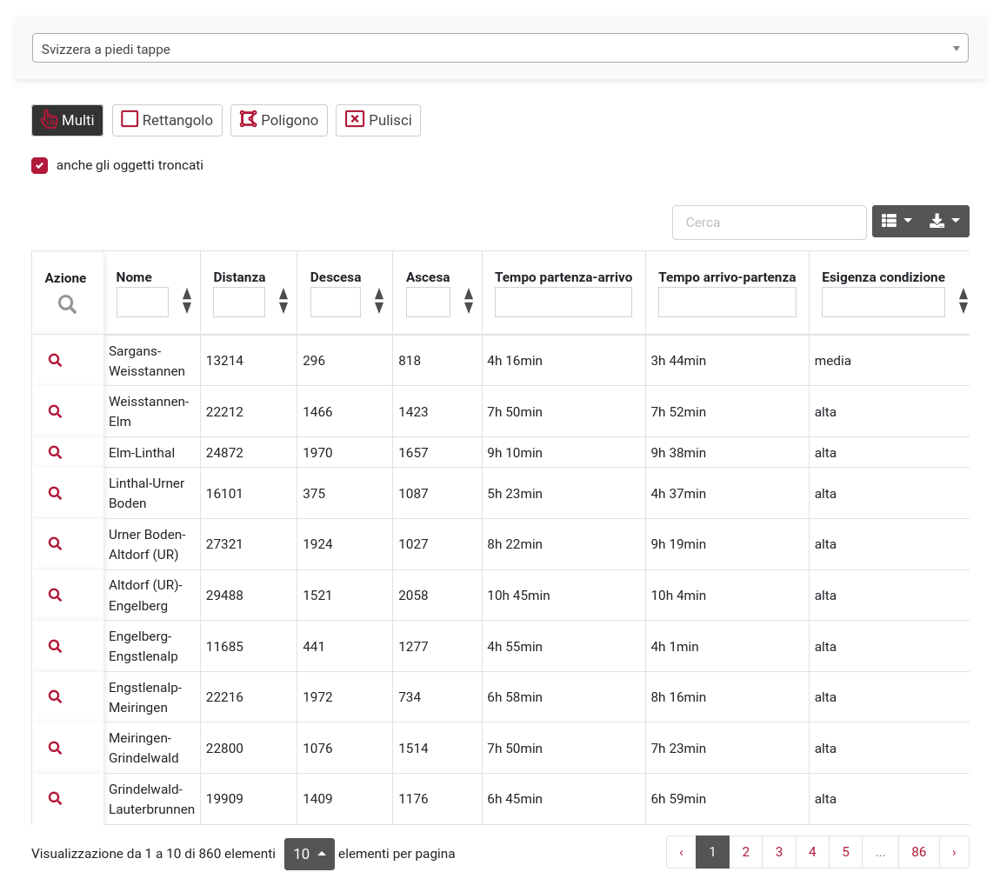
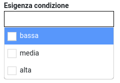

Campi testo: inserimento di testo arbitrario, viene filtrato in base al testo inserito.
Nell'esempio: bern -> Via Albula/Bernina, Via Berna
Rimuovi filtro: Elimina campo o clicca sulla funzione "Pulisci"

Funzionalità sulle liste:
I dati possono essere filtrati su qualsiasi colonna o combinazione di colonne. Sono disponibili diversi tipi di filtri a seconda del contenuto della colonna:
Campi testo: inserimento di testo arbitrario, viene filtrato in base al testo inserito.
Nell'esempio: bern -> Via Albula/Bernina, Via Berna
Rimuovi filtro: Elimina campo o clicca sulla funzione "Pulisci"

Campi selezione: Campi con contenuti fissi, selezione singola o multipla del filtro.
Esempio: Esigenza condizione bassa, media e/o alta, eventualmente combinati con un filtro di testo come sopra.
Rimuovi filtro: Elimina campo o clicca sulla funzione "Pulisci"

Campi numerici: operatori numerici: più grande, più piccole, uguale, ecc. o intervallo da-a.
Esempio, ad es. filtro per la distanza desiderata: <4000, 4000-6000, >10000 ecc.
Esempio di combinazione con campi di selezione: Distanza <4000 e esigenza condizione bassa e esigenza tecnica bassa; se si sente all'altezza: Distanza > 10000, esigenza condizione alta e esigenza tecnica alta
Rimuovi filtro: Elimina campo o clicca sulla funzione "Pulisci"
Sono disponibili le seguenti opzioni di selezione, che possono essere combinate con i filtri menzionati sopra. Facoltativamente solo oggetti interi o anche oggetti intersettati. La selezione viene riflessa nella lista.

Seleziona le colonne da mostrare: seleziona e deseleziona le colonne da visualizzare.

Esporto: JSON, XML, CSV, TXT, SQL, MS Excel